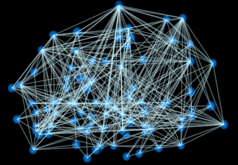
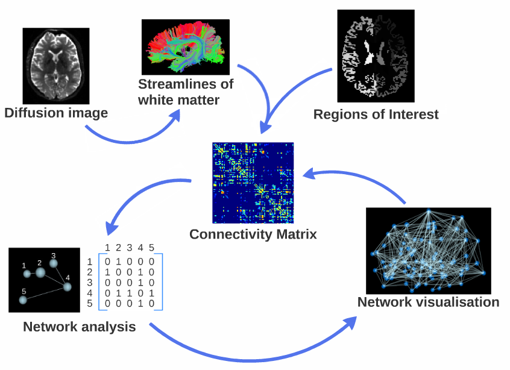
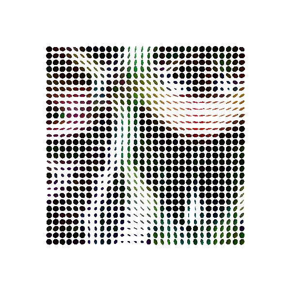
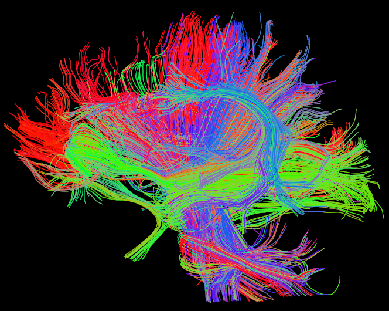
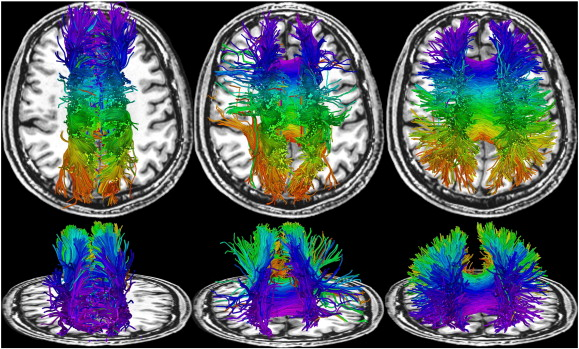
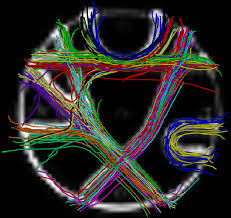
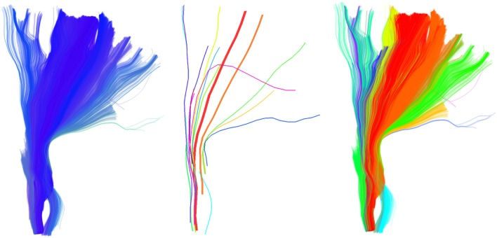

Brain diffusion tractography
and connectomics
Adam Rybiński
Connectomics


github.com/arybinski/diffusionNetworks

Diffusion MRI
Modeling diffusion
Diffusion statistics

Mean diffusivity


Fractional anisotropy

Principal diffusion direction

From diffusion to tracks


Tractography
Deterministic

Probabilistic

Global
Multi-Scale Diffusion Estimation and Tractography

Quickbundles

(Garyfallidis, 2012)DIPY: Diffusion MRI in Python
Part of the NIPY community
Started in 2009 by Eleftherios Garyfallidis


adam@rybinski.info

github.com/arybinski